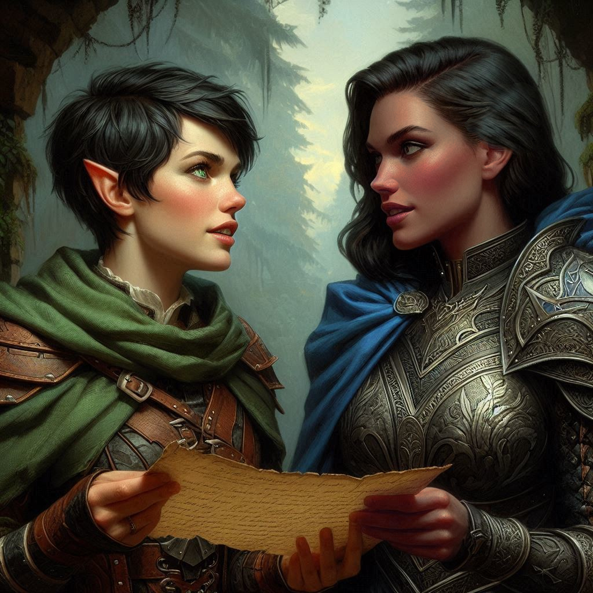
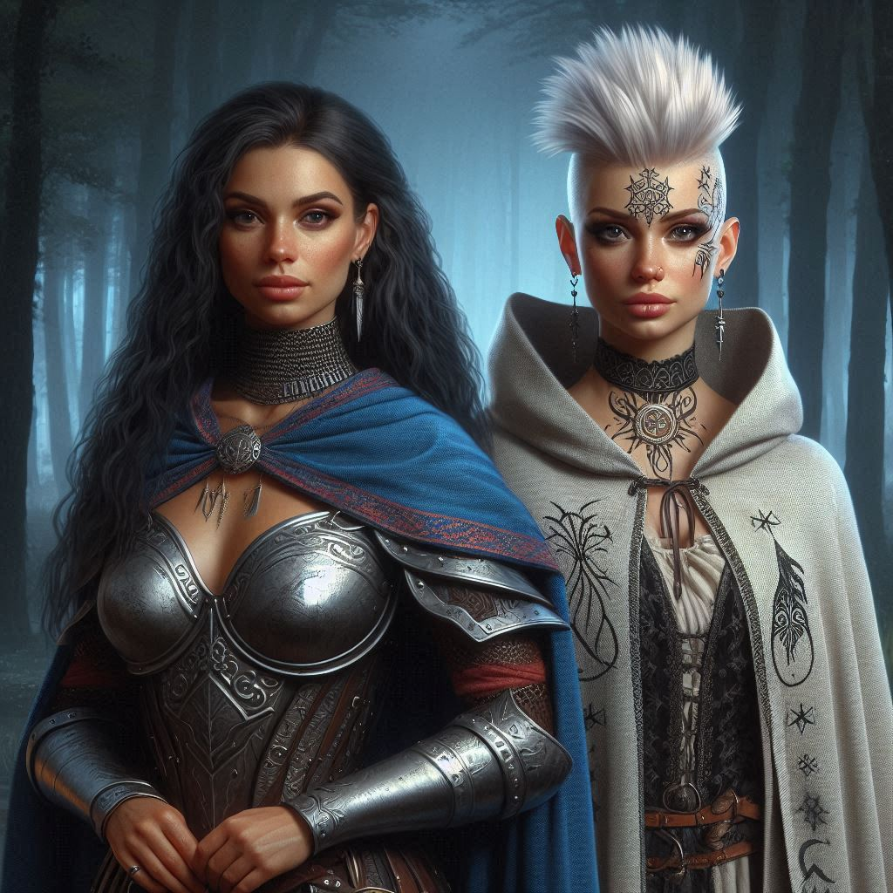

The Hemlock Ultimatum
You’re not sure how you got past the royal guard, the barking hounds, or the enchanted gates, but somehow—through charm, dumb luck, and a good dose of Liora’s magic—you now stand in the royal advisor’s chamber, sweat beading your brow, the stolen half-map tucked tightly into your belt.
Liora closes the door behind you, lips pressed into a tight smile. Her chamber is cluttered with tomes, scrolls, and strange glimmering crystals suspended in air. It smells faintly of jasmine, parchment, and something more ancient.
“I suppose I should have you arrested,” she says, her voice smooth as riverstone. “But arresting rangers in the middle of a coup rarely ends well for anyone.”
You raise a brow. “A coup?”
“Not yet,” she replies, brushing past you toward a wardrobe carved with serpents and vines. “But one’s coming. And you, darling girl, are in the middle of it.”
She opens the wardrobe, revealing a hidden alcove instead of clothes. A torch flickers beyond the stone archway. “Come. Hawthorn is waiting.”
You hesitate. “You’re taking me to the princess?”
Liora turns, her eyes shimmering with mischief and warning. “That’s what you wanted, is it not?”
“She’s hiding in a secret tunnel behind your wardrobe?” You raise an eyebrow suspiciously.
“I’m taking you to her real court. The one not weighed down by crowns and courtiers.” Liora sniffs with a mixture of amusement and annoyance. She disappears into the dark passage and fades into the shadows. You look around nervously before putting your hand on the hilt of your sword and chasing silently after her.
You find her waiting at the end of a passage that opens into the palace stables. Before you can question her further, she mounts a slender silver steed already nervously pawing the straw covered ground. She points at you and to a second horse in the same stable. You leap onto your own borrowed steed—coarse-haired and stubborn-eyed—and gallop into the blackened forest night beside her.
The ride through Hemlock Pass is treacherous. Cold wind whips at your face, and the pines sway like mourners in a funeral procession. You don’t ask why Liora knows the secret path to the outpost; you’re too focused on the thought of what’s ahead. Hawthorn. The princess. The map. Jorsh.
Eventually, the trees part, and there it is—a hidden camp of slate-colored tents pressed into a cliffside beneath the moon. Silent sentries watch your approach, but Liora waves them off with a flick of her hand.
Princess Hawthorn steps from the largest tent, draped in a cloak of blue silk that shimmers like breaking waves on a cloudy day. Her eyes gleam with curiosity and calculation, her long black hair undone and tumbling down her shoulders in deliberate disarray. She doesn’t greet you like royalty. She studies you like prey.
“So,” she says. “You’re Kira Coldspring. The little ranger with a big sword and a bigger grudge.”
Your hand twitches at your side. “I’m here to stop Jorsh. That’s all.”
Hawthorn smiles, turning to Liora. “She’s stubborn. I like that.”
Liora only bows slightly before slipping into the shadows. You’re alone with the princess now. The wind hushes.
Hawthorn gestures for you to follow her into the tent. “I think we need to talk.”
Inside, the tent is surprisingly luxurious—cushions, warm furs, a brazier burning fragrant wood. The map fragment you stole now rests beside another: its mirror half. The complete treasure map.
You lean in instinctively. “You have it…”
“I do,” Hawthorn replies, circling behind you. Her fingers trail lightly across your shoulder. “And I know where it leads. But I need someone like you to help me retrieve it.”
“Why me?” you whisper, already feeling your pulse quicken.
“Because,” she breathes, brushing your ear with her lips, “you’re torn. You want to do your duty… but you also want something more. Purpose. Belonging. Maybe even love.”
Your breath catches as a warm, golden light washes over the room. She’s weaving something—words, magic, desire. You feel it wrap around your thoughts like velvet chains.
Charm spell: successful.
You sway slightly, heart thundering. Her scent—honeysuckle and rain—makes you dizzy. She places a hand gently on your cheek.
“Jorsh wants the treasure for himself. I want it to keep this kingdom from collapsing under Varis’s blackmail. We can get it together. No more shadows. No more lies. And maybe…” Her lips hover over yours, “…no more loneliness.”
You close your eyes.
For a moment, it feels like the world has stopped moving.
But then another face crashes through the spell.
Jorsh. Younger, laughing, tousle-haired, barefoot in the woods. The memory stings. That boy is gone. And the man he became may be worse than you feared. But you remember.
You take a step back. The spell doesn’t break—it lingers, wrapping around your ribs like a soft net—but you’re awake now. Awake enough to think.
Hawthorn watches you with cool eyes, unreadable.
“This is your moment, Kira,” she says. “Come with me. Help me find the treasure. Or cling to your badge and chase a boy who is already lost.”
She turns toward the map, drawing her fingers across its delicate parchment. “Either way… your choice changes everything.”
You stand at the threshold of the tent. Your heart is split in two. One path leads toward riches, toward power, maybe toward something real with Hawthorn. The other… toward your mission. Your honor. And Jorsh.
You must choose.